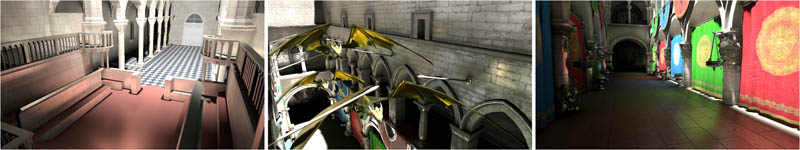

So, a lot has happened. I completed my Doctorate, almost moved to Norway, but then ended up moving to Canada instead (Victoria, BC). I now work for the Advanced Technology Group at Intel, where I was very fortunate enough to have the opportunity to assist a new colleague of mine, Masamichi Sugihara (@masasugihara), with his publication "Layered Reflective Shadow Maps for Voxel-based Indirect Illumination," which has been accepted to HPG 2014.

Check out the preprint here
We introduce a novel voxel-based algorithm that interactively simulates both diffuse and glossy single-bounce indirect illumination. Our algorithm generates high quality images similar to the reference solution while using only a fraction of the memory of previous methods. The key idea in our work is to decouple occlusion data, stored in voxels, from lighting and geometric data, encoded in a new per-light data structure called layered reflective shadow maps (LRSMs). We use voxel cone tracing for visibility determination and integrate outgoing radiance by performing lookups in a pre-filtered LRSM. Finally we demonstrate that our simple data structures are easy to implement and can be rebuilt every frame to support both dynamic lights and scenes.
Hire Masamichi!
Due to some rather shortsighted reorganization, Masasmichi is currently pursuing employment opportunities that will either; allow him to stay in Canada, or return to Japan. If you are interested in hiring a top-notch graphics coder, please get in touch.